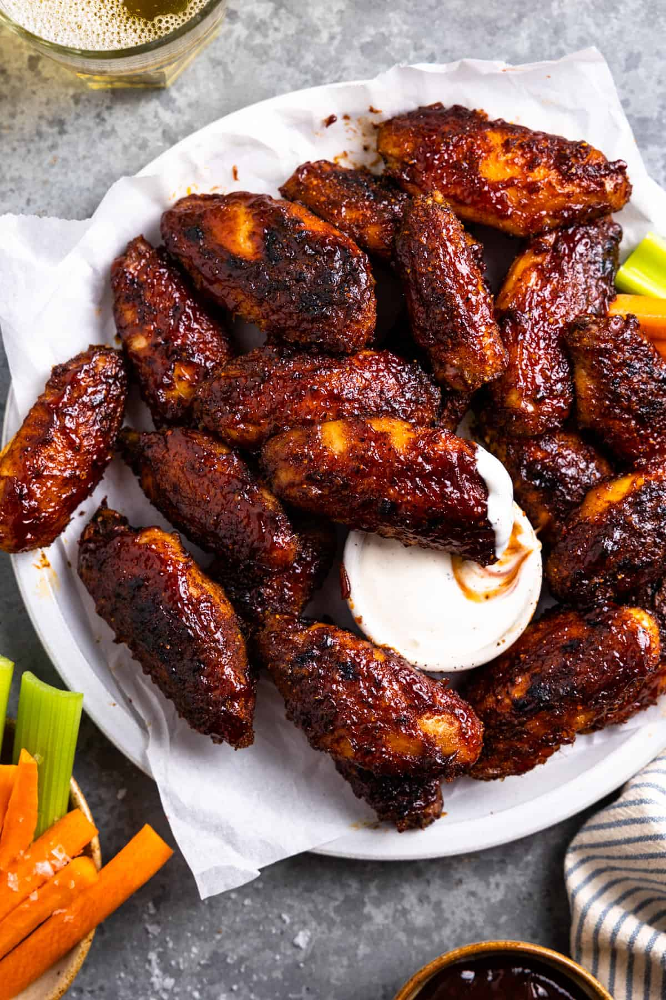

Smoked Wings

Description
Juicy Wings that are perfect for any smoker
Ingredients
- 16 chicken wings, tips discarded
- 1/4 cup olive oil
- 1/4 cup dry rub for chicken (lemon pepper)
- 1 pound mesquite wood chips, soaked in water
- 1 (8 ounce) bottle blue cheese salad dressing
Directions
-
Place chicken wings in a large bowl.
Pour in olive oil; toss with hands until coated.
Coat wings evenly with dry rub.
- Light charcoal and heat smoker to 170 to 200 degrees F (77 to 93 degrees C)
according to manufacturer's instructions.
- Drain wood chips and place half of them directly on the charcoal.
Spread wings evenly on the cooking grate skin-side down.
- Smoke wings until fragrant, about 1 hour.
- Flip wings. Add remaining wood chips to the charcoal.
Continue smoking until an instant-read thermometer inserted near the
bone reads 165 degrees F (74 degrees C), about 1 hour more.
- Serve chicken wings with blue cheese dressing.